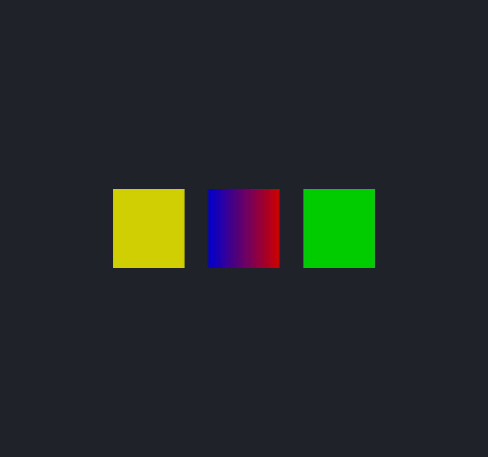
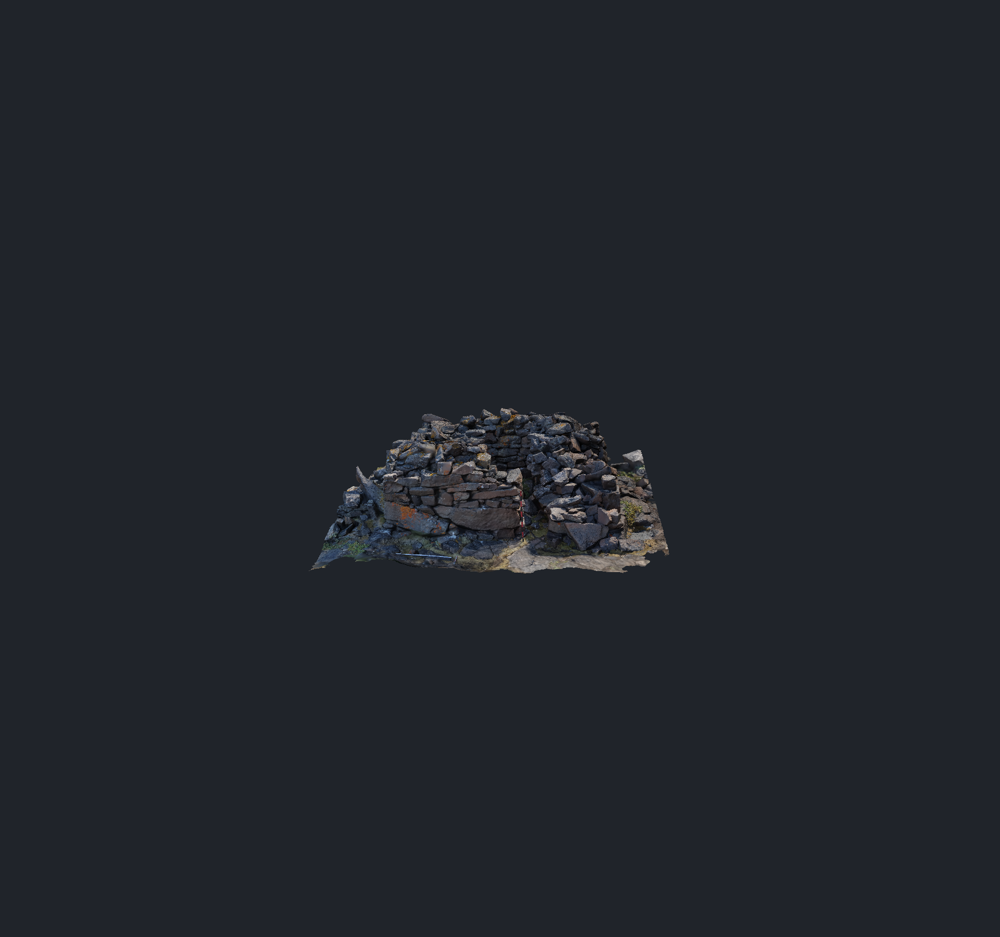

Display the colors stored in OBJ vertices.
Authored RGB now reaches surfaces, lines and points. A vertex without RGB keeps the current part color. The parser stores RGB in four bytes and uses integer operations for common six-decimal colors.
Visible behavior
Source RGB takes precedence over the part RGB. Lighting still applies to surfaces. Part opacity remains in use. Colors interpolate across triangles and lines. Vertex markers and point clouds use the source point color, including after spatial sorting and proxy selection.
The fallback also works within one file. An uncolored vertex uses its part color even when another vertex has RGB. Authored black stays black. Changing a part color affects only vertices that have no source RGB.

BearTrap with its source colors

Parser time: feature cost and decoder benefit
The previous parser validates RGB but discards it. The two RGB versions both store the same packed colors. Only the numeric conversion differs between them. Each cell shows the median of five fresh processes, followed by the full range.
| Input | Previous: RGB ignored | RGB: numeric conversion | RGB: integer fast path |
|---|---|---|---|
| BearTrap | 3.780 s3.710–4.183 s | 4.120 s4.044–5.291 s | 4.167 s3.916–6.444 s |
| Bennu (no RGB) | 0.593 s0.588–0.622 s | 0.611 s0.608–0.662 s | 0.625 s0.609–0.636 s |
| Decimal RGB: 2M vertices | 0.061 s0.060–0.065 s | 0.080 s0.079–0.081 s | 0.070 s0.069–0.073 s |
The integer path reduces parser time by 12.7% on the two-million-vertex color fixture. BearTrap uses 6.5% less process CPU time than the numeric RGB version, but this run does not show a BearTrap wall-time improvement from the integer decoder.
Against the previous parser that ignored RGB, BearTrap parser time rises by 10.2%. Bennu contains no RGB; its measured median rises by 5.3%, although it allocates no color arrays. Supporting color is therefore not a zero-cost change. These are measurements on one machine, not a scaling claim for other CPUs.
All parser wall-time samples, in seconds
| Input | Version | Five samples |
|---|---|---|
| BearTrap | Previous: RGB ignored | 3.898 · 3.780 · 3.710 · 3.716 · 4.183 |
| BearTrap | RGB: numeric conversion | 5.291 · 4.143 · 4.120 · 4.081 · 4.044 |
| BearTrap | RGB: integer fast path | 6.444 · 4.167 · 4.224 · 4.118 · 3.916 |
| Bennu (no RGB) | Previous: RGB ignored | 0.590 · 0.604 · 0.593 · 0.622 · 0.588 |
| Bennu (no RGB) | RGB: numeric conversion | 0.608 · 0.611 · 0.610 · 0.662 · 0.641 |
| Bennu (no RGB) | RGB: integer fast path | 0.630 · 0.636 · 0.609 · 0.625 · 0.623 |
| Decimal RGB: 2M vertices | Previous: RGB ignored | 0.061 · 0.061 · 0.065 · 0.060 · 0.062 |
| Decimal RGB: 2M vertices | RGB: numeric conversion | 0.080 · 0.081 · 0.080 · 0.079 · 0.081 |
| Decimal RGB: 2M vertices | RGB: integer fast path | 0.073 · 0.071 · 0.070 · 0.070 · 0.069 |
Full CPU import
With RGB support, the BearTrap CPU import median changes from 10.063 s to 9.829 s across three paired rounds. The final geometry fingerprint matches in all runs. The ranges overlap; these three rounds do not establish a full-import speedup from color support.
| Phase | Previous: RGB ignored | RGB enabled |
|---|---|---|
| Parser | 4.183 s3.723–4.205 s | 4.020 s3.859–4.170 s |
| Mesh preparation | 5.855 s5.826–5.916 s | 5.793 s5.770–5.866 s |
| Total CPU import | 10.063 s9.672–10.070 s | 9.829 s9.690–10.076 s |
Storage and conversion
v x y z r g bsupplies normalized RGB. Woby also acceptsv x y z w r g b; the position weight keeps full double precision.- Finite colors are clamped to [0, 1] and rounded to RGB8. Long decimals, signs and exponents use the existing numeric decoder before packing. Invalid or nonfinite values still fail parsing.
- For
d.dddddd, an eight-byte digit operation validates and decodes the number. Integer arithmetic converts it directly to an RGB8 channel, without an intermediate floating-point value. All one million six-decimal fractions were checked against the numeric conversion. - The fourth byte marks whether a color exists. Zero means fallback;
0xff000000means authored black. It does not replace part opacity. - Each parser block starts its color storage at its first colored vertex. Blocks with no RGB allocate none. A merge task builds the final array while other merge tasks run.
- The render vertex stays 32 bytes and the compact point stays 16 bytes. Optional color buffers use four bytes per render vertex or source point. Colors follow source position IDs through seams, spatial sorting and marker ID changes.
- Generated freeform samples keep the part-color fallback. Control-point RGB is not interpolated onto tessellated freeform surfaces.
BearTrap has 37,890,645 source colors: 144.5 MiB of packed parser output. After corner mapping, its render color array uses 146.5 MiB. No-color inputs have zero color output bytes.
Process CPU time and memory
| Input | Version | CPU time | Peak commit | Peak working set |
|---|---|---|---|---|
| BearTrap | Previous: RGB ignored | 45.016 s | 8.954 GiB | 8.891 GiB |
| BearTrap | RGB: numeric conversion | 50.844 s | 9.247 GiB | 9.179 GiB |
| BearTrap | RGB: integer fast path | 47.516 s | 9.248 GiB | 9.178 GiB |
| Bennu (no RGB) | Previous: RGB ignored | 7.125 s | 1.830 GiB | 1.825 GiB |
| Bennu (no RGB) | RGB: numeric conversion | 7.375 s | 1.831 GiB | 1.826 GiB |
| Bennu (no RGB) | RGB: integer fast path | 7.406 s | 1.831 GiB | 1.826 GiB |
| Decimal RGB: 2M vertices | Previous: RGB ignored | 0.641 s | 0.108 GiB | 0.095 GiB |
| Decimal RGB: 2M vertices | RGB: numeric conversion | 0.812 s | 0.112 GiB | 0.110 GiB |
| Decimal RGB: 2M vertices | RGB: integer fast path | 0.703 s | 0.117 GiB | 0.110 GiB |
Validation
- Release application and unit tests built with the
vs2026-vcpkgpreset, with no compiler or linker warnings. - All 121 configured CTest entries passed, including unit, slow, graphics and headless checks.
- AVX2 and scalar parser suites passed. AddressSanitizer passed 14 cases and 692,662 assertions with no findings.
- GPU checks cover quads, 32-bit atomics and 64-bit atomics, each with 1× and 4× MSAA. They check missing colors, authored black, marker ID remapping and capture without marker writes. The point suite passed again after the authored-black case was added.
- Headless checks render surfaces, lines and points; verify gradients, fallback edits and opacity; and compare saved/reloaded scene pixels.
- Tests cover color quantization, malformed values, weights, every raw block alignment, native and stream readers, cancellation, seams, freeforms, upload ownership and deferred point buffers.
- The new shader paths compile for Metal with warnings treated as errors. Runtime graphics tests used Vulkan on Windows; Metal runtime behavior was not tested here.
Release build · Full CTest run · ASan run · ASan build · Final point GPU check · Metal compile check
Reproduce the measurements
Each input is warmed before every sample. Variant order rotates. The runner requires two idle CPU samples at or below 15% and checks that no compiler, tests or viewer are active before it starts. The power scheme remains fixed. Output hashing is outside the measured parse/import interval.
cmake --build D:/.worktree/woby-parser-build-9921 --config Release --target woby_parser_benchmark woby_parser_color_reference --parallel 2 -- /nr:false uv run experiments/parser-throughput/color_compare.py --fast D:/.worktree/woby-parser-build-9921/bin/Release/woby_parser_benchmark.exe --generic D:/.worktree/woby-parser-build-9921/bin/Release/woby_parser_color_reference.exe --before D:/.worktree/woby-vertex-colors-results-9921/before-parser.exe --output parser-comparison.json --rounds 5 --workers 16 D:/temp/obj_tests/20190810_BearTrap_Ground_Model.obj D:/temp/obj_tests/bennu_OLA_v21_PTM_very-high.obj
The reference target changes only a generated benchmark header. Production always uses the integer color decoder. The previous binaries were saved from the parser-only implementation at ad2ba25. Preserve them before rebuilding.
Raw parser samples, input hashes, source hashes and binary hashes · Raw CPU import samples · CPU import runner used here · Render evidence script · Previous parser performance report